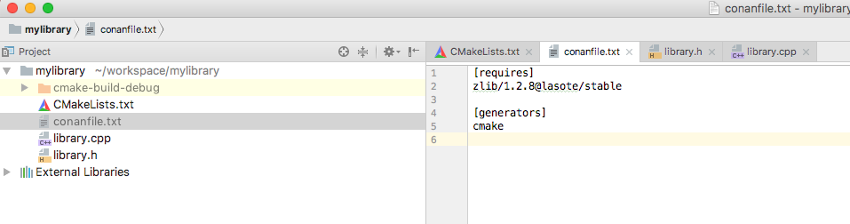
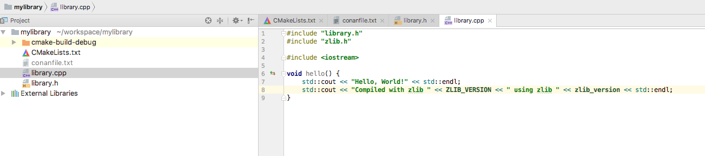

CLion¶
CLion¶
CLion uses CMake as the build system of projects, so you can use the CMake generator to manage your requirements in your CLion project.
Just include the conanbuildinfo.cmake this way:
if(EXISTS ${CMAKE_BINARY_DIR}/conanbuildinfo.cmake)
include(${CMAKE_BINARY_DIR}/conanbuildinfo.cmake)
conan_basic_setup()
else()
message(WARNING "The file conanbuildinfo.cmake doesn't exist, you have to run conan install first")
endif()
If the conanbuildinfo.cmake file is not found, it will print a warning message in the Messages console of your Clion IDE.
Using packages in a CLion project¶
Let see an example of how to consume Conan packages in a CLion project. We are going to require and use
the zlib conan package.
- Create a new CLion project

- Edit the
CMakeLists.txtfile and add the following lines:
if(EXISTS ${CMAKE_BINARY_DIR}/conanbuildinfo.cmake)
include(${CMAKE_BINARY_DIR}/conanbuildinfo.cmake)
conan_basic_setup()
else()
message(WARNING "The file conanbuildinfo.cmake doesn't exist, you have to run conan install first")
endif()

3. CLion will reload your CMake project and you will be able to see a Warning in the console, because the
conanbuildinfo.cmake file still doesn’t exists:

4. Create a conanfile.txt with all your requirements and use the cmake generator. In this case we are only
requiring zlib library from a conan package:
[requires]
zlib/1.2.11@conan/stable
[generators]
cmake

5. Now you can conan install for debug in the cmake-build-debug folder to install your requirements and
generate the conanbuildinfo.cmake file there:
$ conan install . -s build_type=Debug --install-folder=cmake-build-debug
6. Repeat the last step if you have the release build types configured in your CLion IDE, but changing the build_type setting accordingly:
$ conan install . -s build_type=Release --install-folder=cmake-build-release
- Now reconfigure your CLion project, the Warning message is not shown anymore:

8. Open the library.cpp file and include the zlib.h, if you follow the link you can see that CLion automatically
detect the zlib.h header file from the local conan cache.

- Build your project normally using your CLion IDE:

You can check a full example of a CLion project reusing conan packages in this github repository: lasote/clion-conan-consumer.
Creating conan packages in a CLion project¶
Now we are going to see how to create a conan package from the previous library.
- Create a new CLion project
- Edit the
CMakeLists.txtfile and add the following lines:
if(EXISTS ${CMAKE_BINARY_DIR}/conanbuildinfo.cmake)
include(${CMAKE_BINARY_DIR}/conanbuildinfo.cmake)
conan_basic_setup()
else()
message(WARNING "The file conanbuildinfo.cmake doesn't exist, you have to run conan install first")
endif()
- Create a
conanfile.pyfile. It’s recommended to use the conan new command.
$ conan new mylibrary/1.0@myuser/channel
And edit the conanfile.py:
- We are removing the
sourcemethod because we have the sources in the same project, so we can use theexports_sources. - In the
package_infomethod adjust the library name, in this case ourCMakeLists.txtis creating a target library calledmylibrary. - Adjust the CMake helper in the
build()method, thecmake.configure()doesn’t need to specify thesource_folder, because we have thelibrary.*files in the root directory. - Adjust the
copyfunction calls in thepackagemethod to ensure that all your headers and libraries are copied to the conan package.
from conans import ConanFile, CMake, tools
class MylibraryConan(ConanFile):
name = "mylibrary"
version = "1.0"
license = "<Put the package license here>"
url = "<Package recipe repository url here, for issues about the package>"
description = "<Description of Mylibrary here>"
settings = "os", "compiler", "build_type", "arch"
options = {"shared": [True, False]}
default_options = "shared=False"
generators = "cmake"
requires = "zlib/1.2.11@conan/stable"
def build(self):
cmake = CMake(self)
cmake.configure()
cmake.build()
# Explicit way:
# self.run('cmake "%s" %s' % (self.source_folder, cmake.command_line))
# self.run("cmake --build . %s" % cmake.build_config)
def package(self):
self.copy("*.h", dst="include", src="hello")
self.copy("*.lib", dst="lib", keep_path=False)
self.copy("*.dll", dst="bin", keep_path=False)
self.copy("*.so", dst="lib", keep_path=False)
self.copy("*.dylib", dst="lib", keep_path=False)
self.copy("*.a", dst="lib", keep_path=False)
def package_info(self):
self.cpp_info.libs = ["mylibrary"]
- To build your library with CLion follow the guide of Using packages from the step 5.
5. To package your library use the conan export-pkg command passing the used build-folder. It
will call your package() method to extract the artifacts and push the conan package to the local
cache:
$ conan export-pkg . mylibrary/1.0@myuser/channel --build-folder cmake-build-debug
- Now you can upload it to a conan server if needed:
$ conan upload mylibrary/1.0@myuser/channel # This will upload only the recipe, use --all to upload all the generated binary packages.
8. If you would like to see how the package looks like before exporting it to the local cache (conan export-pkg) you can use the conan package command to create the package in a local directory:
$ conan package . --build-folder cmake-build-debug --package-folder=mypackage
If we list the mypackage folder we can see:
- A
libfolder containing our library- A
includefolder containing our header files- A
conaninfo.txtandconanmanifest.txtconan files, always present in all packages.
You can check a full example of a CLion project for creating a conan package in this github repository: lasote/clion-conan-package.